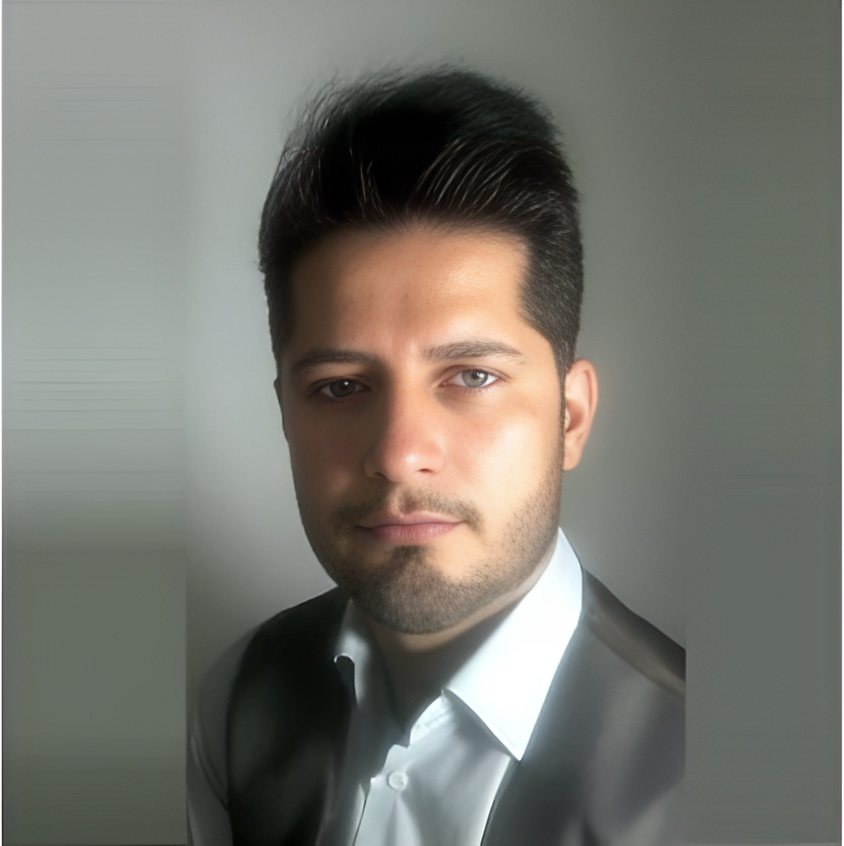

Health Data Governance
حکمرانی دادههای سلامت

Researcher in Healthcare Management & Policy making
Health Sciences Research Center · Mazandaran University of Medical Sciences
I am a researcher in Health Management and Policy at the Health Sciences Research Center, Mazandaran University of Medical Sciences. My work focuses on strengthening health systems through evidence-informed management, quantitative methods, and responsible use of health data. To bridge methodological rigor and practice, I develop computational platforms and quantitative decision-support tools for health economics, real-world evidence, psychometrics, and health equity.
پژوهشگر مدیریت خدمات بهداشتی و درمانی در مرکز تحقیقات علوم بهداشتی دانشگاه علوم پزشکی مازندران. تمرکز پژوهشی من بر حکمرانی دادههای سلامت، مدیریت و سیاستگذاری سلامت، روشهای کمی و مدلسازی آماری، سلامت دیجیتال و بهبود عملکرد نظام سلامت است. همچنین در راستای ترجمان دانش و تصمیمگیری مبتنی بر شواهد، به طراحی ابزارهای محاسباتی در حوزههای اقتصاد سلامت، تحلیل علّی، روانسنجی و ارزیابی عدالت در سلامت میپردازم.
محورهای پژوهشی
حکمرانی دادههای سلامت
مدیریت و سیاستگذاری سلامت
مدلسازی معادلات ساختاری و محاسبات آماری
سلامت دیجیتال و سیستمهای اطلاعات سلامت
مراقبتهای اولیه و سلامت شهری
تحلیل هزینه ـ فایده بیمارستانی
A representative selection across healthcare service quality, evidence synthesis, environmental health, health policy, patient safety, and hospital performance.
Authors: Aliasghar Nadi, Jalil Shojaee, Ghassem Abedi, Hasan Siamian, Ehsan Abedini, Farideh Rostami.
Medical Archives. 2016;70(2):135–139.
DOI / Publisher record ↗ · PubMed ↗
Healthcare service qualityAuthors: Ghassem Abedi, Jalil Shojaee, Mahmood Moosazadeh, Farideh Rostami, Aliasghar Nadi, Ehsan Abedini, Charles John Palenik, Mehrdad Askarian.
Iranian Journal of Medical Sciences. 2017;42(3):227–234.
Evidence synthesis · Patient rightsAuthors: Parinaz Poursafa, Mahmood Moosazadeh, Ehsan Abedini, Yaghoub Hajizadeh, Marjan Mansourian, Hamidreza Pourzamani, Mohammad-Mehdi Amin.
International Journal of Preventive Medicine. 2017;8:19.
DOI / Publisher record ↗ · Full text ↗
Environmental health · Systematic reviewAuthors: Ghasem Abedi, Seyed Amir Soltani Kontai, Abolfazl Marvi, Saeideh Mazidi, Ehsan Abedini, Alireza Abbasi Chaleshtary.
Journal of Mazandaran University of Medical Sciences. 2018;28(166):199–212.
Health policy · Qualitative researchAuthors: Roya Malekzadeh, Ghasem Abedi, Ehsan Abedini, Elaheh Haghgoshayie, Edris Hasanpoor, Matina Ghasemi.
International Journal of Risk & Safety in Medicine. 2021;32(1):51–60.
DOI / Publisher record ↗ · PubMed ↗
Patient safety · Healthcare ethicsAuthors: Roya Malekzadeh, Mozhgan Tavana, Ghasem Abedi, Arash Ziapour, Ehsan Abedini.
Africa Journal of Nursing and Midwifery. 2023;25(2).
Hospital performance · Efficiency analysisHandling peer-review workflows and editorial decisions for interdisciplinary research, quantitative health studies, and health system evaluations.
Editorial governance and evaluation of scholarly submissions specializing in healthcare services, health policy, and healthcare management.
For academic collaboration, research discussion, or professional inquiries, use the institutional contact details published by Mazandaran University of Medical Sciences or connect through the academic profiles above.